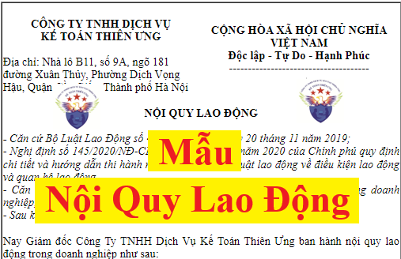

Mẫu nội quy lao động (Nội quy công ty) mới nhất năm 2026 của doanh nghiệp theo quy định tại Bộ Luật lao động số 45/2019/QH14 và hướng dẫn chi tiết tại Nghị định 145/2020/NĐ-CP
Theo khoản 2, Điều 118 của Bộ luật Lao động số 45/2019/QH14 thì nội quy lao động bao gồm những nội dung chủ yếu sau đây:
a) Thời giờ làm việc, thời giờ nghỉ ngơi;
b) Trật tự tại nơi làm việc;
c) An toàn, vệ sinh lao động;
d) Phòng, chống quấy rối tình dục tại nơi làm việc; trình tự, thủ tục xử lý hành vi quấy rối tình dục tại nơi làm việc;
đ) Việc bảo vệ tài sản và bí mật kinh doanh, bí mật công nghệ, sở hữu trí tuệ của người sử dụng lao động;
e) Trường hợp được tạm thời chuyển người lao động làm việc khác so với hợp đồng lao động;
g) Các hành vi vi phạm kỷ luật lao động của người lao động và các hình thức xử lý kỷ luật lao động;
h) Trách nhiệm vật chất;
i) Người có thẩm quyền xử lý kỷ luật lao động.
Và tại khoản 2, Điều 69 Nghị định 145/2020/NĐ-CP quy định chi tiết và hướng dẫn như sau:
Nội dung nội quy lao động không được trái với pháp luật về lao động và quy định của pháp luật có liên quan. Nội quy lao động gồm những nội dung chủ yếu sau:
a) Thời giờ làm việc, thời giờ nghỉ ngơi: quy định thời giờ làm việc bình thường trong 01 ngày, trong 01 tuần; ca làm việc; thời điểm bắt đầu, thời điểm kết thúc ca làm việc; làm thêm giờ (nếu có); làm thêm giờ trong các trường hợp đặc biệt; thời điểm các đợt nghỉ giải lao ngoài thời gian nghỉ giữa giờ; nghỉ chuyển ca; ngày nghỉ hằng tuần; nghỉ hằng năm, nghỉ việc riêng, nghỉ không hưởng lương;
b) Trật tự tại nơi làm việc: quy định phạm vi làm việc, đi lại trong thời giờ làm việc; văn hóa ứng xử, trang phục; tuân thủ phân công, điều động của người sử dụng lao động;
c) An toàn, vệ sinh lao động tại nơi làm việc: trách nhiệm chấp hành các quy định, nội quy, quy trình, biện pháp bảo đảm về an toàn, vệ sinh lao động, phòng chống cháy nổ; sử dụng và bảo quản các phương tiện bảo vệ cá nhân, các thiết bị bảo đảm an toàn, vệ sinh lao động tại nơi làm việc; vệ sinh, khử độc, khử trùng tại nơi làm việc;
d) Phòng, chống quấy rối tình dục tại nơi làm việc; trình tự, thủ tục xử lý hành vi quấy rối tình dục tại nơi làm việc: người sử dụng lao động quy định về phòng, chống quấy rối tình dục theo quy định tại Điều 85 Nghị định này;
đ) Bảo vệ tài sản và bí mật kinh doanh, bí mật công nghệ, sở hữu trí tuệ của người sử dụng lao động: quy định danh mục tài sản, tài liệu, bí mật công nghệ, bí mật kinh doanh, sở hữu trí tuệ; trách nhiệm, biện pháp được áp dụng để bảo vệ tài sản, bí mật; hành vi xâm phạm tài sản và bí mật;
e) Trường hợp được tạm thời chuyển người lao động làm việc khác so với hợp đồng lao động: quy định cụ thể các trường hợp do nhu cầu sản xuất, kinh doanh được tạm thời chuyển người lao động làm việc khác so với hợp đồng lao động theo quy định tại khoản 1 Điều 29 của Bộ luật Lao động;
g) Các hành vi vi phạm kỷ luật lao động của người lao động và các hình thức xử lý kỷ luật lao động: quy định cụ thể hành vi vi phạm kỷ luật lao động; hình thức xử lý kỷ luật lao động tương ứng với hành vi vi phạm;
h) Trách nhiệm vật chất: quy định các trường hợp phải bồi thường thiệt hại do làm hư hỏng dụng cụ, thiết bị hoặc có hành vi gây thiệt hại tài sản; do làm mất dụng cụ, thiết bị, tài sản hoặc tiêu hao vật tư quá định mức; mức bồi thường thiệt hại tương ứng mức độ thiệt hại; người có thẩm quyền xử lý bồi thường thiệt hại;
i) Người có thẩm quyền xử lý kỷ luật lao động: người có thẩm quyền giao kết hợp đồng lao động bên phía người sử dụng lao động quy định tại khoản 3 Điều 18 của Bộ luật Lao động hoặc người được quy định cụ thể trong nội quy lao động.
Căn cứ vào các quy định tại Bộ Luật lao động số 45/2019/QH14 và Nghị định 145/2020/NĐ-CP nêu trên, công ty đào tạo Kế Toán Diệu Tâm xin được cung cấp cho các bạn 1 mẫu nội quy lao động chuẩn mới nhất 2026 để các bạn tham khảo như sau:
NỘI QUY LAO ĐỘNG- Căn cứ Bộ Luật Lao Động số 45/2019/QH14, ngày 20 tháng 11 năm 2019; - Nghị định số 145/2020/NĐ-CP ngày 14 tháng 12 năm 2020 của Chính phủ quy định chi tiết và hướng dẫn thi hành một số điều của Bộ luật lao động về điều kiện lao động và quan hệ lao động. - Căn cứ tổ chức sản xuất kinh doanh và tổ chức sản xuất lao động trong doanh nghiệp; - Sau khi trao đổi thống nhất với Ban Chấp hành Công đoàn Công ty, Nay Giám đốc Công Ty TNHH Dịch Vụ Kế Toán Diệu Tâm ban hành nội quy lao động trong doanh nghiệp như sau:
Chương I
Điều 1. Nội dung và mục đích:NHỮNG QUY ĐỊNH CHUNG Nội quy lao động là những quy định về kỷ luật lao động mà người lao động phải thực hiện khi làm việc tại doanh nghiệp; quy định việc xử lý đối với người lao động có hành vi vi phạm kỷ luật lao động; quy định trách nhiệm vật chất đối với người lao động vi phạm kỷ luật lao động làm thiệt hại tài sản của Công ty. Điều 2. Phạm vi áp dụng: Nội quy lao động áp dụng đối với tất cả mọi người lao động làm việc trong doanh nghiệp theo các hình thức và các loại hợp đồng lao động, kể cả người lao động trong thời gian tập việc, thử việc, học nghề. Điều 3. Áp dụng, sửa đổi và bổ sung: - Những vấn đề không được quy định trong nội quy lao động này sẽ được giải quyết theo những quy định của Luật Lao động và các văn bản pháp luật khác hướng dẫn Luật lao động. - Tuỳ thuộc vào sự thay đổi chính sách công ty và Luật đao động và môi trường kinh doanh, những điều khoản của Nội quy lao động có thể được sửa đổi, bổ sung tuỳ từng trường hợp. Công ty sẽ đăng ký những sửa đổi này tại Phòng Lao động Thương binh Xã hội quận Cầu Giấy và thông báo cho tất cả Người lao động. Điều 4. Hiệu lực: Những nội dung quy định trong bản nội quy lao động này có hiệu lực thi hành sau 15 ngày kể từ ngày phòng Lao động - Thương binh Xã hội quận Cầu Giấy nhận được đầy đủ hồ sơ đăng ký nội quy lao động.
Chương II
Điều 5. Thời gian làm việc:THỜI GIAN LÀM VIỆC - THỜI GIAN NGHỈ NGƠI - Thời gian làm việc bình thường trong 01 ngày: 7 giờ/ngày:
+ Buổi sáng bắt đầu từ: 8h đến 11h30
- Thời gian làm việc bình thường trong 01 tuần: 6 ngày/tuần, từ thứ 2 đến thứ 7+ Buổi chiều bắt đầu từ: 14h đến 17h30 Điều 6. Thời gian nghỉ ngơi: - Thời gian nghỉ ngơi trong ngày: nghỉ trưa 2 giờ 30 phút - Thời gian nghỉ ngơi trong tuần: Chủ nhật hàng tuần Điều 7. Ngày nghỉ lễ Toàn bộ nhân viên trong công ty được nghỉ làm việc, hưởng nguyên lương những ngày lễ sau:
+ Tết dương lịch: 01 ngày (ngày 01/01 dương lịch)
+ Tết âm lịch: 05 ngày (02 ngày cuối năm và 03 ngày đầu năm mới) + Ngày Giỗ tổ Hùng Vương: 01 ngày (ngày 10 tháng 03 âm lịch) + Ngày Chiến thắng: 01 ngày (ngày 30 tháng 04 dương lịch) + Ngày Quốc tế lao động: 01 ngày (ngày 01 tháng 05 dương lịch) + Quốc Khánh: 02 ngày (ngày 02 tháng 09 dương lịch và 01 ngày liền kề trước hoặc sau);
Nếu những ngày nghỉ nói trên trùng vào ngày nghỉ hàng tuần thì người lao động được nghỉ bù vào ngày tiếp theo.
Điều 8. Nghỉ hằng năm 1. Quản lý ngày nghỉ hằng năm: Người lao động làm việc đủ 12 tháng cho một người sử dụng lao động thì được nghỉ hằng năm, hưởng nguyên lương theo hợp đồng lao động như sau:
+ 12 ngày làm việc đối với người làm công việc trong điều kiện bình thường;
+ 14 ngày làm việc đối với người lao động chưa thành niên, lao động là người khuyết tật, người làm nghề, công việc nặng nhọc, độc hại, nguy hiểm;
+ 16 ngày làm việc đối với người làm nghề, công việc đặc biệt nặng nhọc, độc hại, nguy hiểm.
Ngày nghỉ hằng năm tăng thêm theo thâm niên làm việc như sau:
Cứ đủ 05 năm làm việc cho một người sử dụng lao động thì số ngày nghỉ hằng năm của người lao động theo quy định tại khoản 1 Điều 113 của Bộ luật lao động được tăng thêm tương ứng 01 ngày.
Người lao động làm việc chưa đủ 12 tháng cho một người sử dụng lao động thì số ngày nghỉ hằng năm theo tỷ lệ tương ứng với số tháng làm việc.
Cụ thể được tính như sau: lấy số ngày nghỉ hằng năm cộng với số ngày được nghỉ tăng thêm theo thâm niên (nếu có), chia cho 12 tháng, nhân với số tháng làm việc thực tế trong năm để tính thành số ngày được nghỉ hằng năm.
Khi nghỉ hằng năm, nếu người lao động đi bằng các phương tiện đường bộ, đường sắt, đường thủy mà số ngày đi đường cả đi và về trên 02 ngày thì từ ngày thứ 03 trở đi được tính thêm thời gian đi đường ngoài ngày nghỉ hằng năm và chỉ được tính cho 01 lần nghỉ trong năm. 2. Cách thức nghỉ hằng năm: Việc nghỉ này có thể gộp thành 01 đợt hoặc nhiều đợt.
Người lao động có thể thỏa thuận với người sử dụng lao động để nghỉ hằng năm thành nhiều lần hoặc nghỉ gộp tối đa 03 năm một lần.
Khi nghỉ phép người lao động phải có đơn xin nghỉ phép và thông báo trước cho Người sử dụng lao động:
+ 03 ngày đối với trường hợp bình thường
+ 01 ngày đối với trường hợp khẩn cấp Người sử dụng lao động cũng tuỳ vào tình hình kế hoạch sản xuất và có quyền sắp xếp cho người lao động nghỉ phép hằng năm nhưng phải thông báo trước cho người lao động ít nhất 03 ngày. 3. Cách giải quyết số ngày nghỉ hằng năm chưa nghỉ hết trong năm:
+ Người lao động có số ngày nghỉ hằng năm chưa nghỉ hết trong năm sẽ không được quy đổi thành tiền mà chỉ được chuyển, gộp sang năm tiếp theo nhưng người lao động phải nghỉ hết ngày phép của mình trước ngày 31 tháng 12 của năm sau.
+ Chỉ có trường hợp do thôi việc, bị mất việc làm mà chưa nghỉ hằng năm hoặc chưa nghỉ hết số ngày nghỉ hằng năm thì được công ty thanh toán tiền lương cho những ngày chưa nghỉ.
Tiền lương làm căn cứ trả cho người lao động những ngày chưa nghỉ hằng năm hoặc chưa nghỉ hết số ngày nghỉ hằng năm trong trường hợp do thôi việc, bị mất việc làm là tiền lương theo hợp đồng lao động của tháng trước liền kề tháng người lao động thôi việc, bị mất việc làm.
Điều 9. Nghỉ việc riêng, nghỉ không lương 1. Nghỉ việc riêng: Người lao động được nghỉ việc riêng mà vẫn hưởng nguyên lương và phải thông báo với công ty trong trường hợp sau đây:
+ Kết hôn: nghỉ 03 ngày;
2. Nghỉ không lương:
+ Con đẻ, con nuôi kết hôn: nghỉ 01 ngày; + Cha đẻ, mẹ đẻ, cha nuôi, mẹ nuôi của vợ hoặc chồng; vợ hoặc chồng; con đẻ, con nuôi chết: nghỉ 03 ngày.
Người lao động được nghỉ không hưởng lương 01 ngày và phải thông báo với công ty khi ông nội, bà nội, ông ngoại, bà ngoại, anh, chị, em ruột chết; cha hoặc mẹ kết hôn; anh, chị, em ruột kết hôn.
Ngoài quy định trên, người lao động có thể thoả thuận với công ty để nghỉ không hưởng lương.
Điều 10. Nghỉ ốm đau:- Nếu người lao động bị bệnh thì Người lao động hoặc người thân của người lao động phải thông báo cho Công ty biết trong thời gian sớm nhất. - Trường hợp nghỉ nhiều ngày liên tiếp (hơn 3 ngày liên tục) thì sau khi nghỉ bệnh người lao động phải nộp đơn xin nghỉ bệnh cùng với giấy xác nhận của Bác sĩ, nếu không sẽ bị khấu trừ vào ngày phép năm. - Trong thời gian nghỉ bệnh theo giấy của Bác sĩ, người lao động được hưởng chế độ theo quy định của Bảo Hiểm Xã Hội. Điều 11. Nghỉ thai sản: 1. Đối với lao động nữ: 1.1. Thời gian nghỉ:
- Lao động nữ được nghỉ trước và sau khi sinh con là 06 tháng.
1.2. Chế độ thai sản:
- Trường hợp lao động nữ sinh đôi trở lên thì tính từ con thứ 02 trở đi, cứ mỗi con, người mẹ được nghỉ thêm 01 tháng. - Thời gian nghỉ trước khi sinh tối đa không quá 02 tháng.
Trong thời gian nghỉ thai sản, lao động nữ được hưởng chế độ thai sản theo quy định của pháp luật về bảo hiểm xã hội.
1.3. Trở lại làm việc trước khi hết thời gian nghỉ thai sản
- Trước khi hết thời gian nghỉ thai sản theo quy định, nếu có nhu cầu Lao động nữ phải thông báo cho Người quản lý trực tiếp hoặc Giám đốc ít nhất trước 7 ngày và được sự chấp thuận của Người quản lý trực tiếp và Giám đốc.
1.4. Trở lại làm việc muộn hơn thời gian nghỉ thai sản:
- Khi đi làm sớm, Lao động nữ được thanh toán đủ lương cho những ngày đi làm việc sớm, ngoài những khoản thanh toán đầy đủ từ Quỹ Bảo Hiểm Xã Hội cho toàn bộ thời gian nghỉ thai sản theo quy định pháp luật. - Điều kiện: Lao động nữ đã nghỉ ít nhất được 04 tháng.
- Nếu Người lao động nghỉ thai sản muốn nghỉ thêm một thời gian thì phải thông báo và được sự chấp thuận của Người quản lý trực tiếp hoặc Giám đốc ít nhất trước 10 ngày tính từ ngày kết thúc kỳ nghỉ thai sản của mình. Những ngày nghỉ phép thêm này không vượt quá 30 ngày và được xem như là nghỉ không hưởng lương.
2. Đối với lao động nam:Lao động nam đang đóng bảo hiểm xã hội khi vợ sinh con được nghỉ việc hưởng chế độ thai sản theo quy định về pháp luật bảo hiểm như sau:
+ 05 ngày làm việc với trường hợp sinh thường
Thời gian nghỉ việc hưởng chế độ này được tính trong khoảng thời gian 30 ngày đầu kể từ ngày vợ sinh con. + 07 ngày làm việc với trường hợp sinh phẫu thuật, sinh con dưới 32 tuần tuổi; + Trường hợp sinh đôi thì được nghỉ 10 ngày làm việc, từ sinh 3 trở lên cứ thêm mỗi con thì nghỉ thêm 3 ngày làm việc + Trong trường hợp sinh đôi trở lên mà phải phẫu thuật thì được nghỉ 14 ngày làm việc. Điều 12. Làm thêm giờ 1. Làm thêm giờ là khoảng thời gian làm việc ngoài thời giờ làm việc bình thường được quy định tại điều 5 của nội quy lao động này. 2. Trong quá trình hoạt động sản xuất kinh doanh nếu cần người lao động làm thêm giờ, Công ty sẽ thông báo và thỏa thuận với người lao động về việc làm thêm giờ, làm thêm vào ngày nghỉ, ngày lễ tết.
Đảm bảo:
3. Tiền lương làm thêm giờ, làm việc trong ngày nghỉ, ngày lễ có hưởng lương:
+ Được sự đồng ý của người lao động + Không quá 60 giờ trong 01 tháng, không quá 300 giờ trong 01 năm.
- Trong ngày làm việc bình thường (Từ thứ 2 đến thứ 7): Người lao động sẽ được thanh toán lương là 150% tiền lương thực trả của công việc đang làm.
4. Người sử dụng lao động có quyền yêu cầu người lao động làm thêm giờ vào bất kỳ ngày nào mà không bị giới hạn về số giờ làm thêm theo quy định tại Điều 107 của Bộ luật lao động và người lao động không được từ chối trong trường hợp sau đây:
- Trong ngày nghỉ (Chủ nhật): Người lao động sẽ được thanh toán lương là 200% tiền lương thực trảcủa công việc đang làm. - Trong ngày nghỉ lễ và ngày nghỉ phép có hưởng lương: Người lao động sẽ được thanh toán lương là 300% tiền lương thực trả của công việc đang làm.
- Thực hiện lệnh động viên, huy động bảo đảm nhiệm vụ quốc phòng, an ninh theo quy định của pháp luật;
- Thực hiện các công việc nhằm bảo vệ tính mạng con người, tài sản của cơ quan, tổ chức, cá nhân trong phòng ngừa, khắc phục hậu quả thiên tai, hỏa hoạn, dịch bệnh nguy hiểm và thảm họa, trừ trường hợp có nguy cơ ảnh hưởng đến tính mạng, sức khỏe của người lao động theo quy định của pháp luật về an toàn, vệ sinh lao động. Chương III
TRẬT TỰ NƠI LÀM VIỆC
Điều 13. Thực hiện công việc được giao:
- Người lao động có trách nhiệm thực hiện đúng các công việc được giao theo hợp đồng lao đồng đã ký kết. - Tuân thủ theo sự phân công, sắp xếp công việc của người quản lý trực tiếp hoặc giám đốc. - Tuân thủ thời gian làm việc và thời gian nghỉ ngơi đã quy định tại điều 5 của nội quy lao động này, không đi làm trễ hoặc vắng mặt mà không xin phép hoặc không có lý do chính đáng. Phải thông báo cho cấp trên biết mỗi khi rời vị trí làm việc hoặc ra ngoài công tác. - Trong giờ làm việc không được làm bất cứ công việc riêng nào ngoài công việc được giao. - Không gây mất trật tự trong giờ làm việc. - Không được ngủ trong thời gian làm việc. - Người lao động luôn được mong đợi làm việc tận tâm, trung thực và thật thà tại Công ty, dành thời gian và sự chú tâm cần thiết cho công việc và lợi ích của Công ty, thực hiện công việc với khả năng tốt nhất của mình. Điều 14: Đi trễ, về sớm, đi ra ngoài vì mục đích cá nhân: - Người lao động đến hay rơi khỏi công ty phải bấm vân tay để chấm công đúng quy định. - Trong trường hợp đến trễ hoặc vắng mặt không báo trước vì bệnh hoặc bất kỳ lý do nào khác, người lao động phải thông báo ngay cho người quản lý hoặc giám đốc qua điện thoại và nói lý do đến trễ hoặc vắng mặt. - Người lao động phải được Giám đốc hoặc người quản lý trực tiếp của mình chấp thuận trước nếu muốn về sớm hoặc ra ngoài vì mục đích cá nhân trong giờ làm việc. - Trong trường hợp khẩn cấp, nếu người lao động không tự mình thông báo hoặc thông báo trước thì Người lao động phải thông báo cho người quản lý trực tiếphoặc Giám đốc qua điện thoại hoặc những hình thức trao đổi khác càng sớm càng tốt. - Nếu vắng mặt mà không thông báo hoặc không được chấp thuận trước như quy định tại Điều này sẽ được xem là nghỉ không có lý do chính đáng và bị xử lý kỷ luật theo quy định. Điều 15. Tác phong, thái độ làm việc nơi công sở: - Tất cả mọi người phải có phong thái trang nhã và trang phục thích hợp với môi trường làm việc văn phòng. - Người lao động phải có thái độ tích cực, có tinh thần trách nhiệm trong công việc. - Thực hiện giao tiếp văn minh lịch sự với đồng nghiệp và các đối tác, khách hàng của công ty. - Không được có thái độ khiếm nhã đối với khách hàng, cấp trên. Điều 16. Trang phục nơi công sở:
- Tất cả người lao động phải ăn mặc gọn gàng và chỉnh tề trước khi vào công ty như: không được mặc quần đùi, áo dây hay áo sát sách.
- Mặc đồng phục theo quy định của công ty nếu công ty có phát đồng phục.
Điều 17. Tiếp khách
- Người lao động tiếp khách tại những khu vực tiếp khách theo quy định của Công ty, không được tự ý đưa khách vào các phòng làm việc, phòng họp, nhà kho của Công ty nếu không có sự cho phép của người có thẩm quyền. - Người lao động hạn chế tối đa các cuộc thăm viếng của người thân, bạn bè hay tiếp khách không có mục đích giao dịch công tác tại Công ty. - Người lao động phải có mặt bên cạnh khách hàng trong suốt thời gian khách lưu lại Công ty, không được để khách tuỳ tiện đi lại trong khu vực làm việc của Công ty, không được để khách ở lại Công ty sau thời gian làm việc vì bất cứ lý do nào; - Người lao động không được phép vào nơi làm việc trong trường hợp đang bị tạm đình chỉ công tác hoặc đã thôi việc. Nếu có nhu cầu liên hệ trực tiếp với Công ty thì phải chấp hành các thủ tục quy định như đối với khách. Điều 18. Các hành vi bị nghiêm cấm: Người lao động không được thực hiện các hàng vi sau trong thời gian làm việc hoặc trong phạm vị của công ty:
a) Hút thuốc trong khu vực quy định không được hút thuốc.
b) Uống rượu bia trong giờ làm việc. c) Tham gia vào những chuyện ngồi lê đôi mách ác ý hoặc cáo buộc sai, cản trở sản xuất hoặc phá vỡ hoặc ngăn cản người lao động thực hiện công việc của họ. d) Có hành vi trái đạo đức hoặc không đứng đắn tại trụ sở. e) Cố cưỡng ép, lăng nhục, đe doạ hoặc doạ dẫm người lao động khác. f) Lăng nhục, đe doạ hoặc doạ dẫm đối tác, khách hàng của công ty. g) Cố ý gây thương tích cho người lao động khác hoặc đối tác, khách hàng của công ty. h) Sử dụng ma túy trong công ty. i) Tổ chức đánh bạc trong công ty. j) Tàng trữ vũ khí, chất nổ hoặc những vật dụng nguy hiểm hay bị cấm khác trong trụ sở công ty. k) Cố ý gây thiệt hoặc trộm cắp tài sản của công ty hoặc tài sản của Người lao động khác. m) Quấy rối tình dục hoặc bất cứ hành vi quấy rối nào khác hoặc phân biệt đối xử đối với đồng nghiệp.
Điều 19. Chuyển người lao động làm công việc khác so với hợp đồng lao động
1. Khi gặp khó khăn đột xuất do thiên tai, hỏa hoạn, dịch bệnh nguy hiểm, áp dụng biện pháp ngăn ngừa, khắc phục tai nạn lao động, bệnh nghề nghiệp, sự cố điện, nước hoặc do nhu cầu sản xuất, kinh doanh thì người sử dụng lao động được quyền tạm thời chuyển người lao động làm công việc khác so với hợp đồng lao động nhưng không được quá 60 ngày làm việc cộng dồn trong 01 năm; trường hợp chuyển người lao động làm công việc khác so với hợp đồng lao động quá 60 ngày làm việc cộng dồn trong 01 năm thì chỉ được thực hiện khi người lao động đồng ý bằng văn bản.
Người sử dụng lao động quy định cụ thể trong nội quy lao động những trường hợp do nhu cầu sản xuất, kinh doanh mà người sử dụng lao động được tạm thời chuyển người lao động làm công việc khác so với hợp đồng lao động.
2. Khi tạm thời chuyển người lao động làm công việc khác so với hợp đồng lao động, người sử dụng lao động phải báo cho người lao động biết trước ít nhất 03 ngày làm việc, thông báo rõ thời hạn làm tạm thời và bố trí công việc phù hợp với sức khỏe, giới tính của người lao động.
3. Người lao động chuyển sang làm công việc khác so với hợp đồng lao động được trả lương theo công việc mới. Nếu tiền lương của công việc mới thấp hơn tiền lương của công việc cũ thì được giữ nguyên tiền lương của công việc cũ trong thời hạn 30 ngày làm việc. Tiền lương theo công việc mới ít nhất phải bằng 85% tiền lương của công việc cũ nhưng không thấp hơn mức lương tối thiểu.
4. Người lao động không đồng ý tạm thời làm công việc khác so với hợp đồng lao động quá 60 ngày làm việc cộng dồn trong 01 năm mà phải ngừng việc thì người sử dụng lao động phải trả lương ngừng việc theo quy định tại Điều 99 của Bộ luật lao động.
CHƯƠNG IV
Điều 20. Trách nhiệm của người sử dụng lao động:AN TOÀN - VỆ SINH LAO ĐỘNG - Công ty phải bảo đảm vệ sinh trong môi trường làm việc, có không gian, hệ thống thông gió và ánh sáng thích hợp và tuân thủ tiêu chuẩn bảo đảm sức khoẻ cho người lao động. - Trang bị cho nơi làm việc những thiết bị y tế và sơ cứu thích hợp và cung cấp đủ thiết bị bảo hộ lao động cho Người lao động khi bắt đầu làm việc hoặc suốt thời gian làm việc. - Công ty chịu trách nhiệm tổ chức khám sức khỏe định kỳ hàng năm cho người lao động. - Trang bị bảng chỉ dẫn về an toàn lao động, vệ sinh lao động đối với máy, thiết bị, nơi làm việc và đặt ở vị trí dễ đọc, dễ thấy tại nơi làm việc; - Lấy ý kiến tổ chức đại diện tập thể lao động tại cơ sở khi xây dựng kế hoạch và thực hiện các hoạt động bảo đảm an toàn lao động, vệ sinh lao động. Điều 21. Trách nhiệm của người lao động: - Chấp hành các quy định, quy trình, nội quy về an toàn lao động, vệ sinh lao động có liên quan đến công việc, nhiệm vụ được giao: + Trước khi rời khỏi chỗ làm, người lao động phải vệ sinh nơi làm việc, kiểm tra thiết bị điện, nước tại chỗ. Bảo đảm các thiết bị đã được tắt, khóa cẩn thận. + Người lao động phải chịu trách nhiệm bảo dưỡng, vệ sinh các thiết bị điện tại chỗ làm việc luôn sạch sẽ. - Sử dụng và bảo quản các phương tiện bảo vệ cá nhân đã được trang cấp; các thiết bị an toàn lao động, vệ sinh lao động nơi làm việc; - Báo cáo kịp thời với người có trách nhiệm khi phát hiện nguy cơ gây tai nạn lao động, bệnh nghề nghiệp, gây độc hại hoặc sự cố nguy hiểm, tham gia cấp cứu và khắc phục hậu quả tai nạn lao động khi có lệnh của người sử dụng lao động. - Người lao động có quyền từ chối hoặc rời bỏ nơi làm việc khi thấy rõ có nguy cơ xảy ra tai nạn lao động, đe dọa tính mạng hoặc sức khỏe của bản thân hoặc cho những người khác cho đến khi sự cố được khắc phục. - Người lao động phải triệt để chấp hành các quy định, quy chế về phòng cháy chữa cháy.
CHƯƠNG V
Điều 22. Sử dụng và bảo vệ tài sản:BẢO VỆ TÀI SẢN CÔNG TY – BÍ MẬT KINH DOANH 1. Sử dụng: - Người lao động chỉ được phép sử dụng các tài sản đã được công ty bàn giao hoặc trang bị để thực hiện công việc của mình. Không được sử dụng các tài sản khác không liên quan đến công việc của mình khi chưa được sự cho phép của người quản lý hoặc giám đốc. - Người lao động không được sử dụng tài sản của Công ty cho bất cứ lợi ích cá nhân nào. 2. Bảo vệ tài sản: - Người lao động trong Công ty phải có trách nhiệm bảo vệ tài sản Công ty; nếu làm thất thoát, hư hỏng thì phải bồi thường - Người lao động không được phép mang các dụng cụ, máy móc, văn bản và bất kỳ tài sản nào của Công ty ra khỏi trụ sở của công ty mà không có sự đồng ý của người quản lý hoặc giám đốc. - Nghiêm cấm Người lao động chiếm đoạt bất cứ tài sản nào của công ty vì mục đích sử dụng cá nhân hoặc bán lại. Điều 23. Giữ bí mật kinh doanh: - Trong khi đang làm việc cho Công ty, người lao động không được tiết lộ hoặc yêu cầu tiết lộ các thông tin bí mật thuộc quyền sỡ hữu của Công ty về khách hàng hoặc nhà cung cấp cho những người không có quyền hạn hoặc bất cứ ai ngoại trừ những người được khách hàng cho phép hay cơ quan pháp luật. - Ngăn ngừa việc cố ý hay không cồ ý tiết lộ các thông tin về quyền sở hữu và thông tin bí mật bằng cách giảm tối thiều rủi ro, người lao động không có thẩm quyền truy xuất vào các thông tin này, các phương pháp - Bảo mật thông tin khách hàng là ưu tiên hàng đầu của mọi người trong Công ty. - Mọi người phải bảo vệ, tùy thuộc vào mức độ an toàn nghiêm ngặt, các thông tin cần được bảo mật mà khách hàng cung cấp cho họ. - Công ty có những nguyên tắc riêng cam kết với khách hàng và xử lý các định nghĩa, tài liệu, giám sát, và quản lý an toàn các tài sản thông tin này. Tất cả người lao động có trách nhiệm hiểu rõ và tuân thủ các nguyên tắc và cách xử lý này.
CHƯƠNG VI
Điều 24. Các hành vi vi phạm kỷ luật lao động:VI PHẠM KỶ LUẬT LAO ĐỘNG HÌNH THỨC XỬ LÝ KỶ LUẬT LAO ĐỘNG - TRÁCH NHIỆM VẬT CHẤT - Vi phạm các quy định của Nội quy lao động này. - Gây thiệt hại hoặc ảnh hưởng xấu cho danh tiếng, lợi ích và tài sản Công Ty. - Hành động vượt quá khả năng hoặc phạm vi trách nhiệm được uỷ quyền khi thực hiện công việc hoặc nhiệm vụ được giao; - Giả mạo chứng nhận của Bác sĩ hoặc những giấy tờ khác để lừa dối công ty. - Lừa đảo khi thực hiện công việc hoặc nhiệm vụ được giao; hoặc vi phạm nhiệm vụ được giao. Điều 25. Nguyên tắc và trình tự xử lý kỷ luật lao động: 1. Nguyên tắc: 1.1. Việc xử lý kỷ luật lao động phải được lập thành biên bản. - Không được áp dụng nhiều hình thức xử lý kỷ luật lao động đối với một hành vi vi phạm kỷ luật lao động. 1.2. Khi một người lao động đồng thời có nhiều hành vi vi phạm kỷ luật lao động thì chỉ áp dụng hình thức kỷ luật cao nhất tương ứng với hành vi vi phạm nặng nhất. - Không được xử lý kỷ luật lao động đối với người lao động đang trong thời gian sau đây:
+ Nghỉ ốm đau, điều dưỡng; nghỉ việc được sự đồng ý của người sử dụng lao động;
1.3. Không xử lý kỷ luật lao động đối với người lao động vi phạm kỷ luật lao động trong khi mắc bệnh tâm thần hoặc một bệnh khác làm mất khả năng nhận thức hoặc khả năng điều khiển hành vi của mình.+ Đang bị tạm giữ, tạm giam; + Đang chờ kết quả của cơ quan có thẩm quyền điều tra xác minh và kết luận đối với hành vi vi phạm được quy định tại khoản 1 và khoản 2 Điều 125 của Bộ luật lao động; + Người lao động nữ mang thai; người lao động nghỉ thai sản, nuôi con dưới 12 tháng tuổi. 1.4. Các hành vi bị nghiêm cấm khi xử lý kỷ luật lao động
+ Xâm phạm sức khỏe, danh dự, tính mạng, uy tín, nhân phẩm của người lao động.
+ Phạt tiền, cắt lương thay việc xử lý kỷ luật lao động. + Xử lý kỷ luật lao động đối với người lao động có hành vi vi phạm không được quy định trong nội quy lao động hoặc không thỏa thuận trong hợp đồng lao động đã giao kết hoặc pháp luật về lao động không có quy định. 2. Trình tự xử lý vi phạm kỷ luật lao động: 2. 1. Khi phát hiện người lao động có hành vi vi phạm kỷ luật lao động tại thời điểm xảy ra hành vi vi phạm, người sử dụng lao động tiến hành lập biên bản vi phạm. Người sử dụng lao động phải chứng minh được lỗi của người lao động. 2.2. Thông báo họp (nội dung, thời gian, địa điểm) xử lý kỷ luật lao động đến:
+ Phải có sự tham gia của tổ chức đại diện người lao động tại cơ sở mà người lao động đang bị xử lý kỷ luật là thành viên;
2.3. Cuộc họp xử lý kỷ luật lao động phải được lập thành biên bản và được thông qua các thành viên tham dự trước khi kết thúc cuộc họp. Biên bản phải có đầy đủ chữ ký của các thành viên tham dự cuộc họp. Trường hợp một trong các thành viên đã tham dự cuộc họp mà không ký vào biên bản thì phải ghi rõ lý do.+ Người lao động phải có mặt và có quyền tự bào chữa, nhờ luật sư hoặc tổ chức đại diện người lao động bào chữa; trường hợp là người chưa đủ 15 tuổi thì phải có sự tham gia của người đại diện theo pháp luật; 2.4. Người giao kết hợp đồng lao động bên phía người sử dụng lao động là người có thẩm quyền ra quyết định xử lý kỷ luật lao động đối với người lao động. 2.5. Quyết định xử lý kỷ luật lao động phải được ban hành trong thời hạn của thời hiệu xử lý kỷ luật lao động hoặc thời hạn kéo dài thời hiệu xử lý kỷ luật lao động. Điều 26. Hình thức xử lý khi vi phạm kỷ luật lao động 1. Hình thức khiển trách bằng văn bản: Đối với các trường hợp vi phạm kỷ luật lần đầu, nhưng không gây ra hậu quả nghiêm trọng ảnh hưởng đến hoạt động sản xuất kinh doanh của Công ty, một trong những hành vi sau sẽ bị xử lý ở hình thức khiển trách:
- Vi phạm điều 5, 13, 14, 15, 16, 19 và điều 22 của Nội quy lao động này.
2. Hình thức kéo dài thời gian nâng lương hoặc cách chức:- Vi phạm điểm a, b, c điều 18 của Nội quy lao động này. - Đồng phạm, che dấu các hành vi vi phạm quy định của Công ty. - Cách hành vi khác vi phạm NQLĐ gây ra hậu quả không nghiêm trọng (giá trị dưới 5.000.000 đồng) theo những quy định luật lao động. 2.1. Hình thức cách chức: - Vi phạm điểm d và e tại điều 18 của Nội quy lao động này. - Sử dụng danh nghĩa Công ty cho việc riêng. - Cản trở giao dịch giữa công ty và khách hàng, và ngược lại. - Giả mạo chứng nhận của Bác sĩ hoặc những giấy tờ khác để lừa dối công ty. - Lừa đảo khi thực hiện công việc hoặc nhiệm vụ được giao; hoặc vi phạm nhiệm vụ được giao. 2.2. Kéo dài thời hạn nâng lương: Xử lý vi phạm bằng hình thức kéo dài thời hạn nâng lương không quá 06 tháng đối với các vi phạm sau đây: - Tái vi phạm các hành vi tại khoản 1 điều 26 của Nội Quy Lao Động này trong vòng 1 tháng kể từ ngày bị khiển trách bằng văn bản. - Có thái độ khiếm nhã đối với khách hàng, cấp trên. - Không tuân thủ các quy định, tiêu chuẩn về an toàn, vệ sinh lao động đã quy định trong Bảng nội quy này. 3. Hình thức sa thải: Hình thức xử lý kỷ luật sa thải được áp dụng trong những trường hợp sau đây: 3.1. Người lao động có hành vi trộm cắp, tham ô, đánh bạc, cố ý gây thương tích, sử dụng ma tuý trong phạm vi nơi làm việc, tiết lộ bí mật kinh doanh, bí mật công nghệ, xâm phạm quyền sở hữu trí tuệ của người sử dụng lao động, có hành vi gây thiệt hại nghiêm trọng hoặc đe doạ gây thiệt hại đặc biệt nghiêm trọng về tài sản, lợi ích của người sử dụng lao động; 3.2. Người lao động bị xử lý kỷ luật kéo dài thời hạn nâng lương mà tái phạm trong thời gian chưa xoá kỷ luật hoặc bị xử lý kỷ luật cách chức mà tái phạm. 3.3. Người lao động tự ý bỏ việc 05 ngày làm việc cộng dồn trong phạm vi 30 ngày kể từ ngày đầu tiên tự ý bỏ việc hoặc 20 ngày làm việc cộng đồn trong phạm vi 365 ngày kể từ ngày đầu tiên tự ý bỏ việc mà không có lý do chính đáng. Điều 27. Thời hiệu xử lý kỷ luật lao động: - Quyết định xử lý kỷ luật lao động phải được ban hành trong thời hạn tối đa là 06 tháng, kể từ ngày xảy ra hành vi vi phạm; trường hợp hành vi vi phạm liên quan trực tiếp đến tài chính, tài sản, tiết lộ bí mật công nghệ, bí mật kinh doanh của người sử dụng lao động thì thời hiệu xử lý kỷ luật lao động tối đa là 12 tháng. - Khi hết thời gian quy định tại khoản 4 Điều 122 của Bộ luật lao động, nếu hết thời hiệu hoặc còn thời hiệu nhưng không đủ 60 ngày thì được kéo dài thời hiệu để xử lý kỷ luật lao động nhưng không quá 60 ngày kể từ ngày hết thời gian nêu trên. Điều 28. Xoá kỷ luật, giảm thời hạn chấp hành kỷ luật lao động 1. Người lao động bị khiển trách sau 03 tháng hoặc bị xử lý kỷ luật kéo dài thời hạn nâng lương sau 06 tháng hoặc bị xử lý kỷ luật cách chức sau 03 năm kể từ ngày bị xử lý, nếu không tiếp tục vi phạm kỷ luật lao động thì đương nhiên được xóa kỷ luật. 2. Người lao động bị xử lý kỷ luật kéo dài thời hạn nâng lương sau khi chấp hành được một nửa thời hạn nếu sửa chữa tiến bộ thì có thể được người sử dụng lao động xét giảm thời hạn. Điều 29. Tạm đình chỉ công việc: 1. Người sử dụng lao động có quyền tạm đình chỉ công việc của người lao động khi vụ việc vi phạm có những tình tiết phức tạp nếu xét thấy để người lao động tiếp tục làm việc sẽ gây khó khăn cho việc xác minh. Việc tạm đình chỉ công việc của người lao động chỉ được thực hiện sau khi tham khảo ý kiến của tổ chức đại diện người lao động tại cơ sở mà người lao động đang bị xem xét tạm đình chỉ công việc là thành viên. 2. Thời hạn tạm đình chỉ công việc không được quá 15 ngày, trường hợp đặc biệt không được quá 90 ngày. Trong thời gian bị tạm đình chỉ công việc, người lao động được tạm ứng 50% tiền lương trước khi bị đình chỉ công việc. Hết thời hạn tạm đình chỉ công việc, người sử dụng lao động phải nhận người lao động trở lại làm việc. 3. Trường hợp người lao động bị xử lý kỷ luật lao động, người lao động cũng không phải trả lại số tiền lương đã tạm ứng. 4. Trường hợp người lao động không bị xử lý kỷ luật lao động thì được người sử dụng lao động trả đủ tiền lương cho thời gian bị tạm đình chỉ công việc. Điều 30. Trách nhiệm vật chất: 1. Bồi thường thiệt hại: 1.1. Người lao động làm hư hỏng dụng cụ, thiết bị hoặc có hành vi khác gây thiệt hại tài sản của người sử dụng lao động thì phải bồi thường theo quy định của pháp luật hoặc nội quy lao động của người sử dụng lao động. Trường hợp người lao động gây thiệt hại không nghiêm trọng do sơ suất với giá trị không quá 10 tháng lương tối thiểu vùng do Chính phủ công bố được áp dụng tại nơi người lao động làm việc thì người lao động phải bồi thường nhiều nhất là 03 tháng tiền lương và bị khấu trừ hằng tháng vào lương theo quy định tại khoản 3 Điều 102 của Bộ luật lao động. 1.2. Người lao động làm mất dụng cụ, thiết bị, tài sản của người sử dụng lao động hoặc tài sản khác do người sử dụng lao động giao hoặc tiêu hao vật tư quá định mức cho phép thì phải bồi thường thiệt hại một phần hoặc toàn bộ theo thời giá thị trường hoặc nội quy lao động; trường hợp có hợp đồng trách nhiệm thì phải bồi thường theo hợp đồng trách nhiệm; trường hợp do thiên tai, hỏa hoạn, địch họa, dịch bệnh nguy hiểm, thảm họa, sự kiện xảy ra khách quan không thể lường trước được và không thể khắc phục được mặc dù đã áp dụng mọi biện pháp cần thiết và khả năng cho phép thì không phải bồi thường. 2. Khiếu nại về kỷ luật lao động, trách nhiệm vật chất Người bị xử lý kỷ luật lao động, bị tạm đình chỉ công việc hoặc phải bồi thường theo chế độ trách nhiệm vật chất nếu thấy không thỏa đáng có quyền khiếu nại với người sử dụng lao động, với cơ quan có thẩm quyền theo quy định của pháp luật hoặc yêu cầu giải quyết tranh chấp lao động theo trình tự do pháp luật quy định. CHƯƠNG VII ĐIỀU KHOẢN THI HÀNH Nội quy lao động này được phổ biến đến từng người lao động và những điểm chính của Nội quy lao động được niêm yết ở nơi làm việc, phòng Hành chính - Nhân sự và Bảng thông báo của Công ty. Tất cả các nhân viên nghiêm túc chấp hành Nội quy Công ty. Các trưởng bộ phận có trách nhiệm theo dõi, kiểm tra việc thực hiện Nội quy lao động này. Trong quá trình áp dụng, nếu cần sửa đổi, bổ sung, khuyến khích các trưởng bộ phận hoặc nhân viên gửi báo cáo, đề xuất bằng văn bản cho Công ty để xem xét, quyết định.
Hà Nội, ngày 02 tháng 01 năm 2026.
Giám đốc |
Các bạn muốn tải (download) các mẫu nội quy lao động (Nội quy công ty) trên đây về để tham khảo và sử dụng thì có thể gửi mail về địa chỉ mail: ketoandieutam@gmail.com => Kế Toán Diệu Tâm sẽ gửi lại các mẫu nội quy lao động (Nội quy công ty) này cho các bạn
Theo quy định tại khoản 1, Điều 69 Nghị định 145/2020/NĐ-CP hướng dẫn khoản 1, Điều 118 của Bộ luật Lao động số 45/2019/QH14 thì:
+ Nếu doanh nghiệp có dưới 10 người lao động thì không bắt buộc ban hành nội quy lao động bằng văn bản nhưng phải thỏa thuận nội dung về kỷ luật lao động, trách nhiệm vật chất trong hợp đồng lao động.
+ Nếu doanh nghiệp có từ 10 người lao động trở lên thì phải ban hành nội quy lao động phải bằng văn bản
Chi tiết, công ty đào tạo Kế Toán Diệu Tâm mời các bạn xem thêm tại đây:
Nội quy lao động là gì? có phải đăng ký không?
Chi tiết, công ty đào tạo Kế Toán Diệu Tâm mời các bạn xem thêm tại đây:
Nội quy lao động là gì? có phải đăng ký không?
Hiệu lực của nội quy lao động

Theo quy định tại Điều 119 của Bộ luật Lao động số 45/2019/QH14 thì:
Nội quy lao động có hiệu lực sau 15 ngày kể từ ngày cơ quan nhà nước có thẩm quyền quy định tại Điều 119 của Bộ luật số 45/2019/QH14 nhận được đầy đủ hồ sơ đăng ký nội quy lao động.
Trường hợp người sử dụng lao động sử dụng dưới 10 người lao động ban hành nội quy lao động bằng văn bản thì hiệu lực do người sử dụng lao động quyết định trong nội quy lao động.